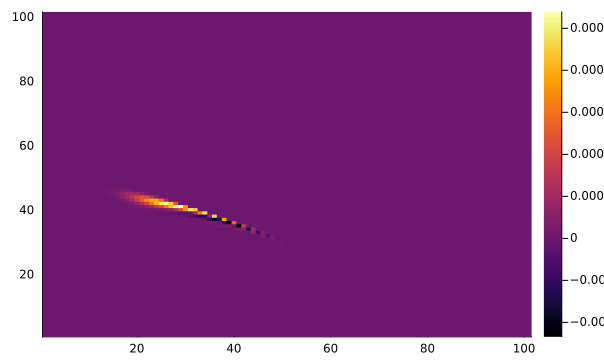

flowchart LR
S --> I
I --> S
flowchart LR
S --> I
I --> S
The compartmental model
flowchart LR
S --> I
I --> S
flowchart LR
S --> I
I --> S
Can be described by a Markov chain of a random variable I(t) representing the number of individuals infected at time t.
digraph {
rankdir = "LR"
0 -> 0
1 -> 0
1 -> 2
2 -> 1
2 -> "..."
"..." -> 2
"..." -> N
N -> "..."
}
Note that I(t) = 0 is an absorbing state (i.e. if there are no infectious people they cannot infect anyone). All other states {1,…, N} are transient.
Possible transitions are specified by
p _ {ji} ( \Delta t ) = \begin{cases} {\frac { \beta i ( N - i ) } { N}} \Delta t, & {j = i + 1 } \\ { \gamma i \Delta t}, & { j = i - 1 } \\ { 1 - \bigg[ \frac { \beta i (N - i) } { N } + \gamma i }\bigg] \Delta t, & { j = i } \\ 0, & { j \neq i +1, i, i-1} \end{cases} \tag{4.1}
Which can be simplified to
p _ {ji} ( \Delta t ) = \begin{cases} b(i) \Delta t, & {j = i + 1 } \\ d(i) \Delta t, & { j = i - 1 } \\ 1 - [ b(i) + d(i)] \Delta t, & { j = i } \\ 0, & { j \neq i +1, i, i-1} \end{cases} \tag{4.2}
The probability of being in state i at time t + \Delta t can be experessed in terms of probabilities at time t. p_{i}(t + \Delta t) = p_{i-1}(t)b(i-1)\Delta t + p_{i+1}(t)d(i+1)\Delta t + p_{i}(t)(1- [ b(i) + d(i)] \Delta t)
for i = 1,2,..., N, where b(i) = \beta (N-1/N), and d(i)= \gamma i
The transition matrix P(\Delta t) is given by \begin{pmatrix} 1 & d(1)\Delta t & 0 & \cdots & 0 & 0 \\ 0 & 1-(b+d)(1)\Delta t & d(2)\Delta t & \cdots & 0 & 0 \\ 0 & b(1)\Delta t & 1-(b+d)(1)\Delta t & \cdots & 0 & 0 \\ 0 & 0t & b(1)\Delta & \cdots & 0 & 0 \\ \vdots & \vdots & \vdots & \ddots & \vdots & \vdots \\ 0 & 0 & 0 & \cdots & d(N-1) \Delta t & 0 \\ 0 & 0 & 0 & \cdots & 1-(b+d)(N-1)\Delta t & d(N) \Delta t \\ 0 & 0 & 0 & \cdots & b(N-1)\Delta t & 1- d(N) \Delta t \\ \end{pmatrix}
The compartmental model
flowchart LR
S --> I
I --> R
flowchart LR
S --> I
I --> R
Can be described by a Markov chain of two independent random variables S(t) and I(t) representing the number of susceptible or individuals infected at time t, respectively (a third RV R(t) denoting the number of recovered individuals is fully determined when the population size is known, i.e. R = N - S - I).
p _ {(s +k, i +j),(s,i)}(\Delta t) = \begin{cases} {\frac { \beta i s} { N}} \Delta t, & {(k, j) = (-1, 1) } \\ { \gamma i \Delta t}, & { (k, j) = (0, -1) } \\ { 1 - \bigg[ \frac { \beta i s } { N } + \gamma i }\bigg] \Delta t, & { (k, j) = (0, 0)} \\ 0, & {otherwise} \end{cases} \tag{5.1}
digraph {
rankdir = "TB"
"S = 0 \n I = 1" -> "S = 0 \n I = 0" [color = "blue"]
"S = 0 \n I = 2" -> "S = 0 \n I = 1" [color = "blue"]
"S = 0 \n I = ~" -> "S = 0 \n I = 2" [color = "blue"]
"S = 0 \n I = N" -> "S = 0 \n I = N - 1" [color = "blue"]
"S = 0 \n I = N - 1" -> "S = 0 \n I = N - 2" [color = "blue"]
"S = 0 \n I = N - 2" -> "S = 0 \n I = ~" [color = "blue"]
"S = 1 \n I = 1" -> "S = 0 \n I = 2" [color = "red"]
"S = 1 \n I = 2" -> "S = 1 \n I = 1" [color = "blue"]
"S = 1 \n I = 2" -> "S = 0 \n I = ~" [color = "red"]
"S = 1 \n I = ~" -> "S = 1 \n I = 2" [color = "blue"]
"S = 1 \n I = ~" -> "S = 0 \n I = ~" [color = "red"]
"S = 1 \n I = ~" -> "S = 0 \n I = N - 1" [color = "red"]
"S = 1 \n I = N - 1" -> "S = 1 \n I = N - 2" [color = "blue"]
"S = 1 \n I = N - 1" -> "S = 0 \n I = N" [color = "red"]
"S = 1 \n I = N - 2" -> "S = 0 \n I = N - 1" [color = "red"]
"S = 1 \n I = N - 2" -> "S = 1 \n I = ~" [color = "blue"]
"S = 2 \n I = 1" -> "S = 1 \n I = 2" [color = "red"]
"S = 2 \n I = 1" -> "S = 2 \n I = 0" [color = "blue"]
"S = 2 \n I = 2" -> "S = 1 \n I = ~" [color = "red"]
"S = 2 \n I = 2" -> "S = 2 \n I = 1" [color = "blue"]
"S = 2 \n I = ~" -> "S = 1 \n I = ~" [color = "red"]
"S = 2 \n I = ~" -> "S = 1 \n I = N - 2" [color = "red"]
"S = 2 \n I = ~" -> "S = 2 \n I = 2" [color = "blue"]
"S = 2 \n I = N - 2" -> "S = 1 \n I = N - 1" [color = "red"]
"S = 2 \n I = N - 2" -> "S = 2 \n I = ~" [color = "blue"]
"S = ~ \n I = 1" -> "S = ~ \n I = 0" [color = "blue"]
"S = ~ \n I = 1" -> "S = ~ \n I = 2" [color = "red"]
"S = ~ \n I = 1" -> "S = 2 \n I = 2" [color = "red"]
"S = ~ \n I = 2" -> "S = ~ \n I = ~" [color = "red"]
"S = ~ \n I = 2" -> "S = 2 \n I = ~" [color = "red"]
"S = ~ \n I = 2" -> "S = ~ \n I = 1" [color = "blue"]
"S = ~ \n I = ~" -> "S = 2 \n I = ~" [color = "red"]
"S = ~ \n I = ~" -> "S = 2 \n I = N - 2" [color = "red"]
"S = ~ \n I = ~" -> "S = ~ \n I = ~" [color = "red"]
"S = ~ \n I = ~" -> "S = ~ \n I = ~" [color = "blue"]
"S = ~ \n I = ~" -> "S = ~ \n I = 2" [color = "blue"]
"S = N - 1 \n I = 1" -> "S = N - 2 \n I = 2" [color = "red"]
"S = N - 1 \n I = 1" -> "S = N - 1\n I = 0" [color = "blue"]
"S = N - 2 \n I = 1" -> "S = ~ \n I = 2" [color = "red"]
"S = N - 2 \n I = 1" -> "S = N - 2 \n I = 0" [color = "blue"]
"S = N - 2 \n I = 2" -> "S = ~ \n I = ~" [color = "red"]
"S = N - 2 \n I = 2" -> "S = N - 2 \n I = 1" [color = "blue"]
}
There are (N + 1)(N + 2)/2 ordered pairs of states (s, i)
N = 100
S = 0:N
I = 0:N
n = Int64((N+1)*(N+2)/2)
a = Base.product(S, I) |> collect |> vec
b = []
for i in a
if sum(i) <= N
push!(b, i)
end
endusing NamedArrays
using SparseArrays
β = 0.5
γ = 0.1
Q = zeros(Float64, lastindex(b), lastindex(b))
for i in eachindex(b)
iS, iI = b[i]
for j in eachindex(b)
jS, jI = b[j]
if iS - jS == 1 && iI - jI == -1 ## Infection condition
Q[i, j] = β*iS*iI/N
elseif iS == jS && iI - jI == 1 ## recovery condition
Q[i, j] = γ*iI
elseif iS == jS && iI == jI
Q[i, j] = -((β*iS*iI/N) + γ*iI)
end
end
endusing ExponentialUtilities
t = 10
x0 = (25, 30)
x0i = findfirst(x -> x == x0, b)
p0 = zeros(lastindex(b))
p0[x0i] = 1
pt = expv(t, Q, p0)5151-element Vector{Float64}:
0.0
0.0
0.0
0.0
0.0
0.0
0.0
0.0
0.0
0.0
0.0
0.0
0.0
⋮
0.0
0.0
0.0
0.0
0.0
0.0
0.0
0.0
0.0
0.0
0.0
0.0unpack the state vector
SImat = zeros(N+1, N+1)
pS = zeros(N+1)
pI = zeros(N+1)
for i in eachindex(pt)
S, I = b[i]
pS[S+1] += pt[i]
pI[I+1] += pt[i]
SImat[S+1, I+1] = pt[i]
endusing StatsPlots
plot(pS)
heatmap(SImat)